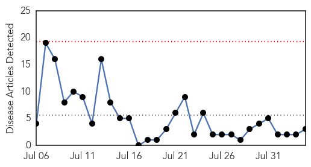
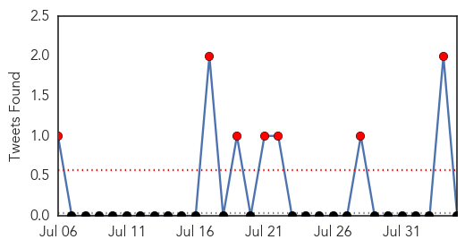
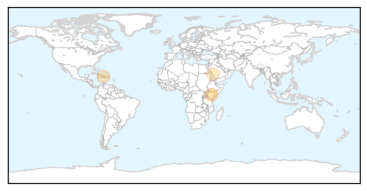
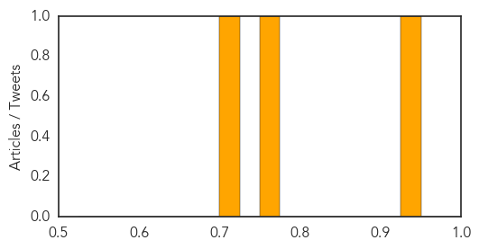

MERS
30-Day Web Trend
0 alerts, 0 warnings

30-Day Twitter Trend
0 alerts, 0 warnings
Article Locations
Article Confidences
Top Articles:
- 0.997
- South Korea replaces health minister criticised over MERS outbreak
- 0.997
- South Korea replaces health minister criticized over MERS outbreak
- 0.972
- South Korea to replace health minister after MERS outbreak
- 0.963
- South Korea's president to replace health minister in wake of criticism over MERS outbreak
- 0.956
- South Korea to replace health minister after MERS outbreak
Top Tweets:
- 0.575
- AFD Blog `Saudi MOH Announces 4 New MERS Cases, 4 Fatalities' MERS-CoV http://t.co/lIAL3QAjR4
Cholera
30-Day Web Trend
0 alerts, 0 warnings

30-Day Twitter Trend
13 alerts, 0 warnings

Article Locations
Article Confidences
Top Articles:
Top Tweets:
-
No tweets found for Aug 04, 2015